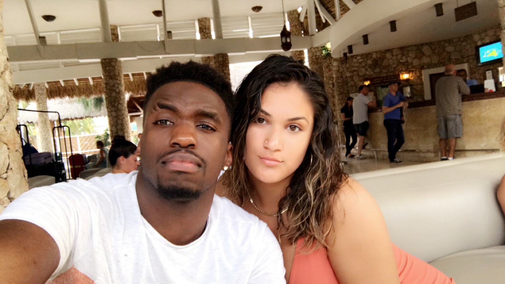
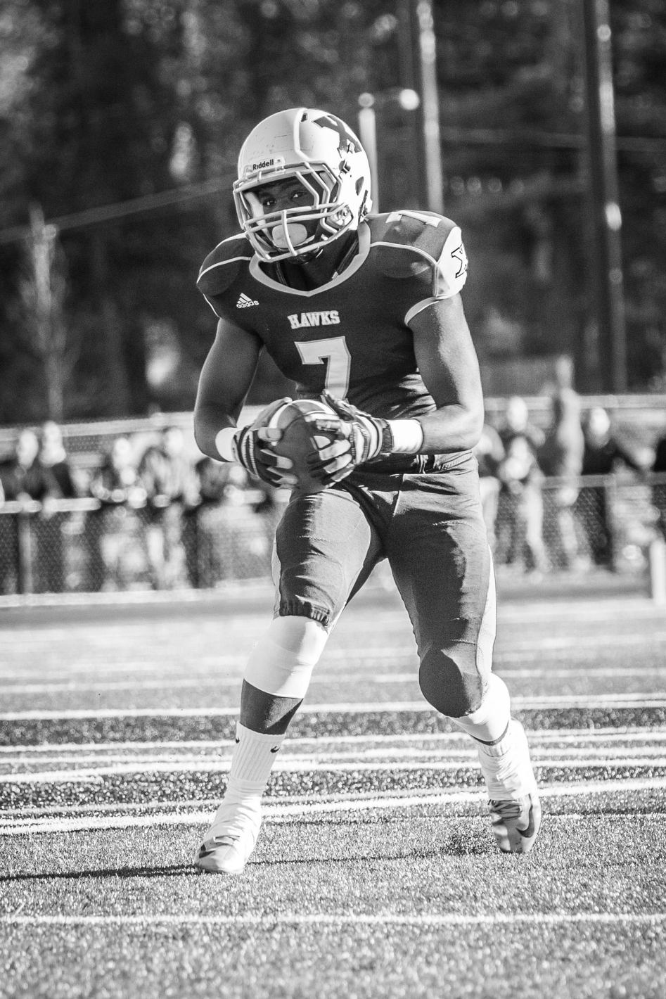
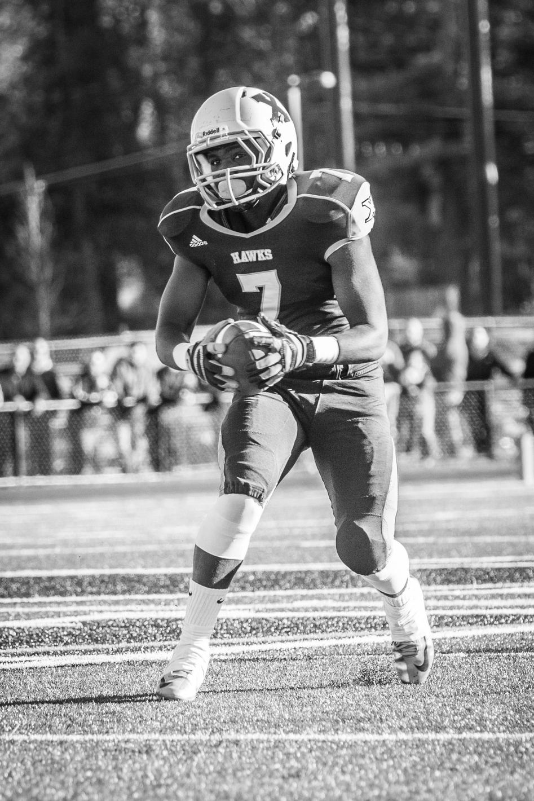

About Me
Home
About Me
Now
- I am twenty years young, and I am living my best life. I CAN'T LIE.
- I am blessed, I get to do what I love everyday, I am healthy, I am access to food, and I got a roof over my head. I cannot complain at all. I got family right now, who would literally die to be in my position so I am extremely grateful.
- I attend UMO and study finance.
- I also play football. I am a cornerback and been doing that now for half life. I LOVE IT!
- I am almost done with school and seeing what life brings me. I know I will be successful because of the hard-work that I put in everyday. God put me on this Earth, for a reason, and I will fulfill his mission. I hope one day I can save the lives of millions of people from both my parents birthplaces. I’ve had dreams of me making a difference in peoples since I was young, so I deel like it's my destiny.
- I still remember the day when my girlfriend bought me a puppy for my birthday. It was instant love the very moment I looked into her hazel eyes.I knew she was a big responsibility and that I should be very careful . I focused all my energies on my little dog that I named Ellie. She became my best friend and I grew extremely attached to her. We do almost everything together, especially cuddle. Being with Ellie taught me many things about life and emotions. Before having her, I never had any feelings of responsibility. I always thought that my actions would never be able to affect anyone on such a large magnitude. As I got more attached to her, I started realizing many things about myself and my feelings that I had never experienced before. She definitly has covered the missing piece , of my the puzzle I call life.

“During college, I met the love of my life. She's an angle from above. The first time I saw her, I knew she was going to be mine. She's such a bright young lady and her future is brighter than a sun. ” To be honest the first couple months of our relationship, I strongly believed that we probably wasn’t going to work out. I used to tell myself that she had too many flaws, and we probably would argue everyday. This was all bullspit, and I think the true reason was that I was afraid of commitment and opening up to her. Throughout my 20 years of life, I’ve experience a lot of things which has made me who I am today. In the early stages of our relationship I failed to realize communication is very important and is the key to a successful relationship. I strongly believe that everything in life comes down to relationships. Relationships are very important to who you are as an individual, and improving my relationships will help me grow as a person. To be successful in any road you travel in life, from football to business, one has to know how to create and maintain strong relationships.
<

I still remember the day when my girlfriend bought me a puppy for my birthday. It was instant love the very moment I looked into her hazel eyes. I knew she was a lot of responsibility and that I should be very careful. I focused all my energies on my little dog that I named Ellie. She became my best friend and I grew extremely attached to her. We do almost everything together, especially cuddle. Being with Ellie taught me many things about life and emotions. Before having her, I never had any feelings of responsibility really. I always thought that my actions would never be able to affect anyone on such a large magnitude. As I got more attached to her, I started realizing many things about myself and my feelings that I had never experienced before. She definitely has covered the missing piece, of my the puzzle I call life.


 

- About Me
- Family
- My Why